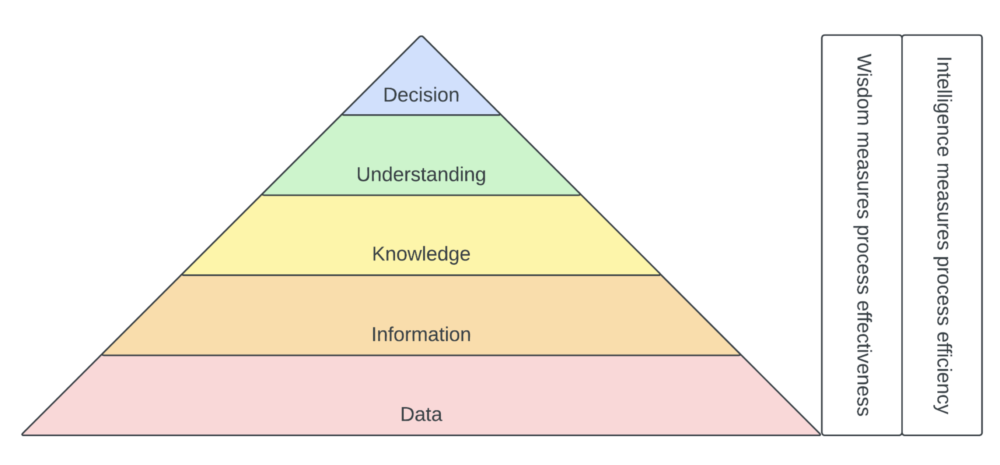
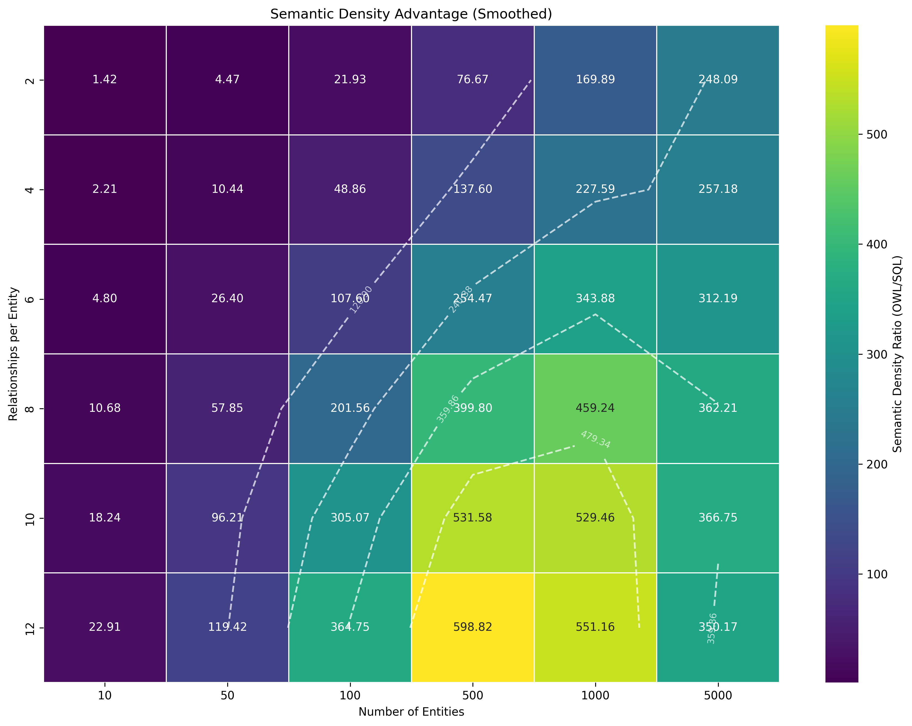

Toward Effective Representation in Interconnected Systems
Abstract
This paper introduces the Semantic Density Principle, a novel formal framework for quantifying and comparing the representational efficiency of knowledge systems. We define semantic density as the ratio of machine-inferable propositions to required computational resources. We argue that achieving high semantic density is critical not only for efficiency but also for enhancing the effectiveness of these systems in addressing complex, interconnected challenges, providing a unified metric that becomes increasingly critical as systems scale toward planetary-level interconnection and complexity.
While traditional relational databases excel at transactional efficiency, and other non-ontological systems like property graphs offer flexible relationship modeling, formal ontological systems (e.g., RDF/OWL) typically achieve superior explicit semantic density through defined semantics and entailment regimes. Neural systems like LLMs exhibit what we term medium implicit semantic density through statistical pattern encoding. Defining “machine-inferable propositions” for LLMs with the same formal rigor as symbolic systems is an area for ongoing research, though their practical utility in generating plausible propositions is clear. Recent advancements in Retrieval Augmented Generation (RAG) demonstrate significant improvements by anchoring LLM retrieval in domain-specific ontologies, showcasing a path to enhance both the efficiency and effective application of semantic density. Through theoretical argument, empirical simulation, and evidence from emerging AI methodologies—including the observed symbiosis between neural and symbolic approaches—we demonstrate that this principle is crucial for addressing integrated challenges—where climate systems, economic networks, governance structures, and diverse knowledge traditions must interoperate effectively within constrained computational resources.
Our analysis reveals that the principle becomes progressively more critical as: (1) knowledge must span multiple domains, (2) information must retain meaning across decentralized contexts, (3) multiple worldviews and knowledge traditions must coexist coherently, and (4) system resilience requires efficient redundancy. These conditions precisely characterize our current planetary moment, where interconnected challenges demand knowledge systems capable of integrating meaning across traditional boundaries.
Drawing inspiration from mycelial networks in nature, and informed by implementations like ontology-grounded hypergraphs (Sharma et al., 2024), we provide a blueprint for knowledge systems that optimize semantic density through strategic combinations and emerging symbiotic relationships between symbolic and neural approaches. This blueprint offers a path toward more coherent, interoperable, and resilient infrastructures for collective intelligence—a foundation for addressing the interdependent, cross-domain challenges that increasingly define our planetary existence.
1. Introduction
As artificial intelligence and computational systems evolve, the representation of knowledge becomes increasingly central to their function and interoperability. The landscape of knowledge representation includes relational database schemas (typically SQL), graph-based ontological systems (e.g., RDF/OWL), property graphs, various NoSQL databases, and the implicit representations within neural networks. While some optimize for transactional efficiency (SQL) or flexible schema (NoSQL, property graphs), formal ontological systems prioritize semantic richness and logical reasoning.
The relationship between these representational paradigms has often been discussed in terms of implementation trade-offs rather than overarching formal principles. This paper addresses this gap by establishing a framework for comparing knowledge representation systems based on their semantic density—a measure of the machine-inferable meaning encoded per unit of storage or computational effort. We will argue that achieving high semantic density is crucial not only for representational efficiency but, more importantly, for enhancing the effectiveness with which knowledge systems can support understanding and action in complex domains.
As humanity faces unprecedented planetary challenges, we confront a fundamental question: Are our knowledge representation systems equal to the task of facilitating effective responses? Traditional approaches—whether relational databases, less formal graph systems, or unstructured text—can reach their limits when information must span multiple domains, retain meaning across decentralized contexts, and integrate diverse perspectives to inform effective action. This is particularly evident with Large Language Models (LLMs), which, despite their capabilities, benefit significantly from mechanisms that enhance the semantic richness and factual grounding of their input (e.g., Sharma et al., 2024), thereby improving their effectiveness. In this paper, we introduce the Semantic Density Principle as an essential foundation for knowledge systems capable of addressing these interconnected challenges with greater efficiency and effectiveness.
Recent breakdowns in centralized systems—from supply chains to energy grids to financial structures—have highlighted the vulnerabilities inherent in optimizing solely for centralized efficiency without due consideration for broader effectiveness and resilience. As humanity faces complex global challenges requiring coordinated yet resilient responses, there is growing recognition that decentralized systems offer crucial advantages in adaptability and fault tolerance. However, such systems depend on knowledge representations that are self-contained, interoperable, and support autonomous local reasoning—qualities that high semantic density promotes, leading to more effective decentralized operations.
The Semantic Density Principle becomes increasingly critical as systems scale toward planetary-level interconnection, where both efficiency and effectiveness are paramount. Our research identifies specific conditions under which semantic density transitions from beneficial to essential for effective system performance:
- When knowledge must span traditional domain boundaries.
- When meaning must flow across decentralized contexts without central coordination.
- When multiple worldviews and knowledge traditions must coexist coherently.
- When systems require both redundancy for resilience and efficiency for scale.
The Semantic Density Principle positions knowledge representation not as a technical implementation detail but as a foundational determinant of our capacity to address planetary-scale challenges effectively. By quantifying how efficiently systems encode machine-inferable meaning, and by linking this efficiency to the potential for more effective application, we provide a framework for designing knowledge systems that balance formal semantic rigor with neural adaptability—systems capable of supporting collective intelligence and effective action at the scale our interconnected challenges demand.
1.1 The Mycelial Metaphor
In addressing these challenges, we draw inspiration from one of nature’s most successful distributed information processing systems: mycelial networks. Fungal mycelium—the vast, interconnected web of fungal threads that can span thousands of acres beneath forest floors—provides a compelling metaphor and model for decentralized knowledge systems. These living networks:
- Create resilient, adaptable connectivity across diverse ecosystems.
- Transmit specific chemical signals with remarkable precision and efficiency.
- Optimize resource allocation based on local conditions while maintaining systemic integrity.
- Enable symbiotic relationships between otherwise disconnected organisms.
- Process environmental information without centralized control.
The structural and functional parallels between mycelial networks and semantically dense knowledge representations offer not just explanatory power but design insights for resilient information systems. If, as some propose, knowledge graphs (KGs) represent the conscious scaffolds or the architecture of entanglement within this mycelial web—modeling not just objects but relationships, context, and meaning—then graph learning techniques provide the means by which we tune into their intelligence and traverse these intricate patterns. Modern implementations, such as the use of ontology-grounded hypergraphs where hyperedges encapsulate clusters of factual knowledge (Sharma et al., 2024), can be seen as a tangible realization of these interconnected, information-rich pathways. Drawing inspiration from systems engineering, we also align our framework with knowledge organization infrastructure (KOI), which encompasses systems, tools, processes, rules, and governance mechanisms that enable the collection, curation, management, sharing, and utilization of knowledge within specific contexts.
1.2 Contributions and Organization
This paper makes four primary contributions:
- We formally define semantic density as a measure of representational efficiency and establish criteria for comparing knowledge representation systems, considering a broader range of systems including relational, graph-based, and neural.
- We present the Semantic Density Principle, arguing that formal ontological representations consistently achieve higher explicit semantic density than relational schemas or less formal graph systems when representing equivalent domain knowledge requiring inference. We link this efficiency to the potential for enhanced effectiveness. This is supported by theoretical reasoning and practical applications like OG-RAG (Sharma et al., 2024).
- We propose an Empirically Supported Hypothesis on LLM query generation, suggesting how semantically dense knowledge representations enhance the accuracy, factual grounding, and ultimately the effectiveness of outputs from large language models, a concept validated by ontology-grounded RAG approaches.
- We explore the implications of this principle for the effective application of emerging paradigms including AI reasoning systems, digital twins, and cosmo-local models of organization.
The paper is organized as follows: Section 2 provides core definitions, linking semantic density to both efficiency and effectiveness. Section 3 presents a comparative analysis of various knowledge representation systems through this dual lens. Section 4 develops the Semantic Density Principle. Section 5 discusses implications for AI systems, digital twins, and decentralized networks, emphasizing how semantic density contributes to their effectiveness. Section 6 presents conclusions and directions for future research.
2. Core Concepts of Semantic Density
Semantic density measures how efficiently a knowledge representation system encodes machine-inferable information. At its essence:
Semantic Density = Information Content / Computational Resources
Where:
- Information Content (IC) refers to the number of distinct, machine-inferable propositions that can be derived from the representation. The quality, interconnectedness, and inferential richness of these propositions, which higher semantic density facilitates, directly contribute to the utility and effectiveness of the knowledge system in supporting complex reasoning and decision-making.
- For formal symbolic systems (e.g., RDF/OWL with defined entailment regimes), a “proposition” is a statement that can be logically inferred according to the system’s semantics and inference rules (e.g., rvdashI_Rp). These propositions are typically understood within a framework where they can be assigned a truth value (epistemic interpretation). However, the concept can also broadly encompass the system’s capacity to store, retrieve, and represent ideas, instructions, definitions, and other forms of structured meaning beyond simple true/false statements. The more interconnected and inferentially rich these propositions are, the more effectively they can model a domain.
- For neural systems (e.g., LLMs), defining “machine-inferable propositions” with the same formal precision is challenging. LLMs generate propositions based on statistical patterns learned during training, rather than performing logical inference in the symbolic sense. Embeddings—dense vector representations of text, entities, or even graph structures—serve as a fundamental representational layer in such systems. The model’s learned parameters then operate on these embeddings to implicitly capture semantic relationships, allowing the system to identify similarities or make plausible connections. A “machine-inferable proposition” in this context might be considered any plausible, coherent statement the LLM (or other neural system) can generate or verify based on its training and given context. The effectiveness here is often tied to the plausibility and relevance of the generated propositions. The paper by Sharma et al. (2024) on OG-RAG, for instance, implicitly treats propositions as facts retrievable and made understandable by an LLM through ontology grounding, enhancing their effective utility.
- Future Research Note: Rigorously defining “machine-inferable propositions” for neural systems in a way that is directly comparable to the definition for symbolic systems, or developing a unified definition that robustly encompasses both paradigms (including aspects of their utility and contribution to effective understanding), remains an important area for future research. This would allow for more precise cross-system comparisons under the Semantic Density metric. For instance, in the analysis of scientific literature, ‘machine-inferable propositions’ can take the form of scientific assertions—core claims and findings extracted from research. These can range from granular supporting assertions (specific evidence) to cardinal assertions (aggregated evidence for a claim) (DDF, 2025). The density of such verifiable assertions within a knowledge graph becomes a tangible measure of its information content relevant to a specific domain.
- Computational Resources (CR) measures the space required to encode the representation (e.g., storage size, token count) and/or the processing effort needed for inference, retrieval, and generation of propositions. For a given system or comparison, it’s important to specify which aspects of computational resources are being considered (e.g., context window size and retrieval efficiency in OG-RAG examples).
Two representations are considered semantically equivalent if they encode the same set of inferable propositions (or can support the generation of equivalent sets of propositions), even if they use different formalism or syntax. The goal is to maximize information content (and its potential for effective application) while minimizing computational resources, a principle exemplified by techniques like OG-RAG which retrieve a minimal set of hyperedges to form a precise, conceptually grounded, and thus more effective context (Sharma et al., 2024).
[Note: Detailed formal definitions and mathematical notation have been moved to Appendix A: Formal Definitions and Mathematical Notation]
3. Comparative Analysis: An Overview of Knowledge Representation Systems
This section provides an overview of different knowledge representation systems, focusing on their capacity to encode semantic information and support inferencing, which are key to understanding their potential semantic density. While traditional relational databases (SQL) excel at transactional efficiency, and property graphs offer flexible relationship modeling, formal ontological systems (e.g., RDF/OWL) typically achieve superior explicit semantic density through defined semantics and entailment regimes. Neural systems like LLMs exhibit implicit semantic density through statistical pattern encoding. The explicitness and formal semantics of RDF/OWL provide a structured foundation that, when leveraged by systems like OG-RAG, can significantly enhance the performance of AI models by providing clear, machine-inferable knowledge (Sharma et al., 2024).
A detailed comparison of these systems, including specific examples and characteristics, can be found in Appendix D: Detailed Comparison of Knowledge Representation Systems. The following table summarizes key comparative insights:
| Aspect | Ontological System (RDF/OWL) | Property Graphs (e.g., Neo4j) | Relational Model (SQL) |
|---|---|---|---|
| Data Model | Graph of triples; flexible schema. New relationships can be added without altering existing structure. OG-RAG leverages these. | Nodes and relationships with properties; flexible schema. Excellent for network analysis. | Tables with rows/columns; rigid schema requiring migrations. |
| Schema Semantics | Rich formal semantics (Description Logics) with classes, hierarchies, axioms enabling inference. Foundational for OG-RAG. | Semantics often implicit or application-defined; less formal than OWL. Rich relationship modeling. | Schema defines tables/constraints; limited inherent semantics for deriving new knowledge. |
| Inference Capability | High (with reasoner) - can deduce implicit facts (class membership, transitive relations, etc.). Aligns with OG-RAG. | Moderate - primarily via path traversal and pattern matching; some rule support in specific systems. | Low (without external logic) - stores and retrieves explicitly written data. |
| Semantic Density | Typically highest explicit semantic density due to axioms and formal inference. | Medium-High; more explicit relationships than SQL, but less formal inferencing than OWL. | Generally lower explicit semantic density. |
| Querying | SPARQL (graph patterns, leveraging inference). Enhanced by methods like OG-RAG. | Cypher, Gremlin (path-oriented queries). | SQL (set-based algebra for known schema). |
| Use Cases | Knowledge graphs, semantic interoperability, complex domain modeling, grounding LLMs (Sharma et al., 2024). | Network analysis, recommendation engines, fraud detection, identity graphs. | Transactional systems, data warehousing, structured data with stable schemas. |
While an SQL schema might appear compact for simple data, RDF/OWL with its axioms (e.g., declaring :knows as owl:SymmetricProperty) encodes more machine-actionable semantic information per unit of representation for complex domains. This enhanced machine-actionability, stemming from higher semantic density, directly contributes to the system’s effectiveness by enabling more sophisticated inferences and a deeper understanding of the domain. Property graphs offer a middle ground, with richer relationship modeling than SQL (enhancing effectiveness for network-centric tasks) but less formal inferential power than OWL out-of-the-box.
This comparison is not about universal superiority. Relational databases excel at transactional workloads where operational efficiency is paramount. Property graphs are powerful for network traversal and flexible relationship modeling, leading to effective analysis of interconnected data. The Semantic Density Principle highlights the specific advantages of formal ontological systems in contexts requiring high levels of machine-inferable knowledge and logical consistency—qualities that enhance both the efficiency of representation and the effectiveness of knowledge application, particularly valuable for grounding advanced AI systems and facilitating robust decision-making. The choice depends on the specific requirements for semantic richness, inferential capability (and thus potential for deeper understanding and effectiveness), flexibility, and performance.
4. The Semantic Density Principle: A Critical Framework for Planetary-Scale Systems
4.1 Core Definition and Scope
Definition 4.1 (Semantic Density). The ratio of machine-inferable propositions (explicit or implicit) to the storage/processing resources required. Higher semantic density indicates a more efficient encoding of meaning, which in turn can contribute to more effective knowledge application by allowing richer, more interconnected information to be processed and utilized within given constraints.
Mathematically:
Semantic Density (SD) = Information Content (IC) / Computational Resources (CR)
Where:
- Information Content (IC) measures the number of distinct, machine-inferable propositions derivable from the representation (see Section 2 for nuances across system types and the link between proposition quality and effectiveness).
- Computational Resources (CR) quantifies both storage requirements (e.g., bits, tokens) and processing overhead (e.g., inference time, retrieval effort) needed for inference and proposition generation. OG-RAG’s optimized retrieval of factual hyperedges exemplifies minimizing CR while maximizing IC for a given query, thereby enhancing the potential for effective use of that information (Sharma et al., 2024).
This definition intentionally aims to be broad enough to encompass various knowledge representation approaches, though practical quantification remains more straightforward for symbolic systems. The ultimate goal of achieving high semantic density is not just parsimony of representation, but the enablement of more effective understanding and action.
Principle 4.1 (The Semantic Density Principle). For representations aiming to capture equivalent domain knowledge, the pursuit of higher semantic density enhances both representational efficiency and the potential for effective application:
- Formal ontological systems (e.g., RDF/OWL) generally achieve higher explicit semantic density than relational systems or less formal graph systems (e.g., property graphs without extensive axiomatic layers) when modeling domains with complex relationships and inference requirements. This increased density facilitates more effective reasoning and knowledge integration.
- Neural systems achieve medium implicit semantic density with greater flexibility for unstructured data. The “inference” here is statistical pattern completion rather than logical deduction. This effective density, and thus the system’s effectiveness in specific tasks, can be significantly enhanced by grounding them in explicit semantic structures, as demonstrated by OG-RAG (Sharma et al., 2024).
- Hybrid systems can optimize total semantic density by strategically combining approaches, aiming to maximize both the efficiency of representation and the effectiveness of the knowledge in practical applications.
This principle is supported by theoretical arguments regarding representational efficiency and its impact on effective knowledge utilization, and by empirical evidence from diverse applications, including AI.
4.2 Symbolic Systems and explicit semantic density
Formal ontological systems achieve higher explicit semantic density than relational systems or typical property graph implementations through:
- Axiom Leverage: A single axiom (e.g., “knows is a symmetric property”) can entail numerous propositions that would otherwise require explicit statement or complex queries.
- Inheritance Efficiency: Class hierarchies allow properties and constraints to be defined once and inherited.
- Inference Multiplication: Each formal inference rule can generate new propositions without additional storage.
- Semantic Self-containment: The meaning, encoded via formal semantics, travels with the data, reducing reliance on external application logic. This is crucial for the ontology-grounded factual blocks in OG-RAG (Sharma et al., 2024). An empirical simulation illustrating these concepts, including a quantitative comparison of estimated token counts for SQL and OWL representations and the resulting heatmap (Figure 4.1), can be found in C.2 Extended Empirical Evidence and Simulation Code for the Semantic Density Principle.
4.3 Neural Systems and Implicit Semantic Density
The Semantic Density Principle extends to a wide array of neural approaches beyond text-based Large Language Models. The evolution of graph learning, from foundational algorithms like PageRank to modern Graph Neural Networks (GNNs), has been pivotal in enabling machines to make sense of complex, interconnected data (Perozzi, 2025). Systems like GNNs used in weather forecasting (e.g., GraphCast) or traffic prediction (e.g., Google Maps), and sophisticated architectures for scientific discovery like AlphaFold for protein structure prediction, achieve a form of “implicit semantic density”. In these cases, the neural network learns to represent complex systems (be it the atmosphere, road networks, or molecular structures) and their dynamics, often using internal graph-based representations. The “machine-inferable propositions” are the accurate predictions or structural determinations these models generate. The “meaning” or “semantics” of the domain are learned statistically from data and encoded implicitly within the network’s weights and learned embeddings.
LLMs, a prominent example of such neural systems, achieve “implicit semantic density” through:
- Compressed Statistical Patterns via Embeddings: Neural weights implicitly encode relationships, often manifested as embeddings (dense vector representations for text, entities, or graph components). These embeddings capture statistical relationships from vast data. Standard Retrieval Augmented Generation (RAG) systems, for example, frequently rely on text embeddings for similarity search in unstructured or semi-structured data, representing a form of implicit semantic density.
- Contextual “Inference”: Neural systems generate plausible propositions based on context and learned patterns.
- Distributed Representation: Information is encoded across the weight space.
Intriguingly, recent research into the internal workings of LLMs suggests they may be developing structures that bear resemblance to symbolic reasoning. For instance, investigations into “Attribution Graphs” within models like Claude 3.5 Haiku reveal that LLMs can form internal chains of reasoning—causal graphs of features that activate in sequences akin to logical steps (Anthropic, 2025). This points towards an emerging convergence where neural AI begins to grow symbolic-like structures internally.
Neural systems typically achieve medium implicit semantic density because:
- They require substantial computational resources for training and sometimes inference.
- Their implicit semantics lack formal guarantees of logical consistency in the symbolic sense. “Inference” is qualitatively different.
- They can struggle with domain-specific nuances without fine-tuning or specialized, grounded retrieval.
However, the effective semantic density, and therefore the effectiveness, of LLMs can be dramatically improved by providing explicit, structured, and semantically rich context. Approaches like OG-RAG (Sharma et al., 2024), using domain ontologies to construct and retrieve factual hypergraphs, show significant gains in factual accuracy and the ability to perform more complex reasoning. This indicates that an LLM-based system’s effective semantic density—and its consequent effectiveness—is a function of its internal model and the quality of external, grounded knowledge it accesses.
4.4 Hybrid Systems: Optimizing Total Semantic Density for Enhanced Effectiveness
Hybrid systems combining symbolic and neural components can optimize total semantic density, leading to more effective knowledge systems. OG-RAG (Sharma et al., 2024) is a key example, integrating domain ontologies (symbolic, providing high explicit semantic density and formal grounding) with LLMs (neural, providing flexible pattern matching and generation). The goal is to leverage the strengths of both to achieve a higher overall effectiveness in knowledge processing and application.
| System Type | Semantic Density | Strengths (contributing to Effectiveness) | Limitations (impacting Effectiveness) |
|---|---|---|---|
| Symbolic (e.g., OWL) | High explicit semantic density | Formal guarantees, logical consistency, compact axiom expression (enabling precise and reliable reasoning). | Limited handling of ambiguity, requires expert knowledge engineering (can be slow to adapt). |
| Property Graphs | Medium-High explicit density (relationships) | Flexible schema, good for network traversal, rich relationship attributes (effective for specific network analyses). | Typically lacks formal inferencing power of OWL without extensions; semantics often application-defined (limiting broader inferential effectiveness). |
| Neural (e.g., LLMs, GNNs, Scientific AI Models) | Medium implicit semantic density | Flexibility with unstructured/complex data, contextual understanding, pattern discovery, predictive power for complex systems (effective for broad, generative, and predictive tasks). | Computational overhead, opacity, potential for hallucination (LLMs) or errors if data is biased/incomplete, struggles with domain adaptation without grounding or sufficient representative data (reducing reliability and factual effectiveness). |
| Hybrid (e.g., OG-RAG) | Optimized total (effective) semantic density | Combines formal reasoning/structure with flexible pattern matching; enhanced factual accuracy and contextual relevance (Sharma et al., 2024), leading to higher overall effectiveness. | Integration complexity, framework compatibility, reliance on quality ontologies (can be challenging to implement well). |
The practical benefits of such hybrid approaches in terms of enhanced effectiveness are becoming increasingly evident. While this paper aims to build a broader theoretical framework, the work by Sharma et al. (2024) provides strong empirical validation for the advantages of ontology-grounding in enhancing the effective semantic density and, consequently, the performance and reliability (i.e., effectiveness) of LLM-based systems. Further sophistication in hybrid RAG systems could involve the combined use of different embedding types. While standard RAG often relies on text embeddings to retrieve relevant passages from document corpora, approaches retrieving from structured knowledge graphs might employ graph embeddings to identify relevant entities or subgraphs based on learned structural patterns. An optimal strategy for certain complex domains might integrate both: using graph embeddings or ontology-guided traversal to pinpoint structurally relevant information within a knowledge graph, and text embeddings to process and rank the natural language descriptions associated with that information, thereby providing a rich, multi-faceted context to the LLM. The OG-RAG framework, while not explicitly using learned graph embeddings for its hypergraph, leverages text embeddings to identify relevant factual nodes within its ontology-derived hypergraph structure, subsequently using an algorithmic approach to select covering hyperedges. Our own query precision experiments (detailed later) further support the hypothesis that structured, semantically rich input improves AI output quality and thus its effectiveness.
4.5 The Critical Threshold: When Semantic Density Becomes Essential for Effectiveness
While semantic density offers advantages in many contexts, it becomes critical for achieving effective outcomes under certain conditions:
- Cross-Domain Integration: Essential for coherence and effective synthesis when connecting diverse domains (e.g., climate science, economics, local governance). High semantic density allows for meaningful linkage and inference across these boundaries.
- Constrained Computational Resources: Directly determines how much meaningful content can be processed within finite computational budgets, such as an LLM’s context window, API limits, or storage capacity. High semantic density in retrieved context ensures that this limited window is utilized optimally, packing maximum relevant meaning and inferential potential per token, directly impacting the quality and effectiveness of generated outputs or predictions. OG-RAG’s optimized retrieval of compact factual clusters (Sharma et al., 2024) directly addresses this challenge.
- Decentralized Knowledge Flow: Self-contained semantic representations are vital for preserving meaning—and thus enabling effective local action—across autonomous nodes.
- Multi-Perspective Knowledge Integration: Enables parallel representation and effective reconciliation of complementary perspectives (scientific, Indigenous, practitioner) without forcing assimilation.
- Adaptive Resilience Requirements: Allows an optimal balance between redundancy for resilience and efficiency for scale, contributing to sustained effectiveness in dynamic environments.
- Specialized Domain Adaptation: Critical for AI systems, especially LLMs, needing high factual accuracy and nuanced understanding in specific domains (e.g., industrial workflows, healthcare) to be truly effective, as shown by ontology-grounded approaches (Sharma et al., 2024).
- Achieving Coherent Understanding and Paradigm Emergence: High semantic density, by fostering a rich network of interconnected and inferable propositions (such as scientific assertions), lays the groundwork for the emergence of coherent bodies of knowledge or dominant paradigms within a field. Percolation theory, when applied to such densely represented knowledge graphs, can identify critical thresholds where sufficient interconnectedness leads to the formation of ‘spanning clusters’ of understanding. Reaching such a percolation threshold, facilitated by high underlying semantic density, can signify that a domain has achieved a level of maturity and integrated understanding essential for effective problem-solving or innovation (DDF, 2025).
These conditions create a “critical threshold” where high semantic density is no longer just an efficiency gain but a prerequisite for effective system operation and problem-solving. Planetary-scale challenges—climate adaptation, bioregional governance, global supply chain resilience—suggest we have crossed this threshold globally.
4.6 Implementation Considerations and Trade-offs for Efficiency and Effectiveness
The Semantic Density Principle reveals important trade-offs when designing for both efficiency of representation and effectiveness of application:
- Computational Overhead vs. Storage/Retrieval Efficiency for Effective Inference: Ontologies may require more computation for complex reasoning (impacting immediate efficiency), but can store inferred knowledge compactly and enable more powerful, effective inferences. Efficient retrieval from ontology-grounded structures (as in OG-RAG) can achieve high accuracy (effectiveness) with comparable query times (Sharma et al., 2024).
- Development Complexity vs. Operational Simplicity and Long-Term Effectiveness: Designing effective ontologies requires expertise (higher initial complexity). However, this can lead to simpler, more robust, and more adaptable systems in the long run, enhancing overall operational effectiveness. Tools for semi-automated ontology learning can help mitigate initial complexity (Sharma et al., 2024).
- Immediate Efficiency vs. Long-term Adaptability and Effectiveness: Relational systems suit stable, transaction-oriented applications where immediate operational efficiency is key. Semantic approaches, with their higher density, excel in evolving, knowledge-intensive contexts needing grounding for long-term adaptability and sustained effectiveness.
- Context-Dependency of Optimal Approaches for Effectiveness:
| Context Characteristic | Often Favored Approach(es) | Semantic Density Consideration for Effectiveness |
|---|---|---|
| Stable domain, high transaction volume | Relational (SQL) | Lower explicit semantic density offset by operational efficiency; effectiveness is tied to predefined tasks. |
| Network analysis, flexible relationships, evolving schema | Property Graphs | Medium-high explicit density for relationships; effective for understanding network structures and dynamics; semantics can be less formal, potentially limiting broader inferential effectiveness. |
| Complex domain, formal reasoning needs for robust decisions | Ontological (OWL) | High explicit semantic density justified by the need for reliable, deep inference to ensure effective and sound outcomes. |
| Unstructured text processing, contextual understanding for broad insights | Neural (LLMs) | Medium implicit semantic density with flexibility; effective for pattern discovery and generation but may lack precision for critical decision-making without grounding. |
| Mixed data, evolving schema, domain-specific LLM adaptation for reliable AI | Hybrid (e.g., OG-RAG, Ontologies + LLMs) | Optimized total semantic density; higher factual accuracy and domain adaptation (Sharma et al., 2024) lead to more effective and trustworthy AI applications. |
| Planetary-scale, cross-domain challenges requiring integrated solutions | Mycelial Architecture (incorporating various KRs) | Maximized effective semantic density through domain-appropriate representation and efficient, grounded retrieval, crucial for holistic understanding and effective, coordinated action. |
The principle guides system architects in choosing appropriate representations based on specific needs for both efficiency and, crucially, the desired level of effectiveness in the target application.
5. Implications for AI Systems and Decentralized Networks
The Semantic Density Principle profoundly impacts the development of decentralized knowledge systems and AI.
5.1 AI Reasoning and LLM Query Generation
Semantically dense representations offer advantages for AI, enhancing both the efficiency of knowledge processing and the effectiveness of AI-driven outcomes:
- Self-contained reasoning and Factual Deduction for Enhanced Effectiveness: OWL-based representations, and ontology-grounded structures like those in OG-RAG, enable more robust logical inference and factual deduction. This makes knowledge portable, self-describing, and more reliably applied, leading to more effective AI systems (Sharma et al., 2024).
- Explicit semantics and Context Attribution for Trustworthy AI: Ontological representations make semantic relationships explicit, facilitating transparent, auditable reasoning. This clarity improves context attribution for LLM responses (as shown by OG-RAG), which is crucial for building trust and ensuring the effective and responsible use of AI.
A significant application lies in LLMs interfacing with structured knowledge via Retrieval Augmented Generation (RAG), where semantic density directly impacts the effectiveness of the generated outputs.
Empirically Supported Hypothesis 5.1 (Query Precision and Effectiveness Enhancement). Given a fixed context window size, an LLM generating queries or responses based on natural language prompts is hypothesized to produce more accurate, factually grounded, and ultimately effective outputs when provided with semantically dense ontological representations (or structures optimally retrieved from them, like ontology-grounded hypergraphs) compared to less semantically dense representations (e.g., basic relational schemas or ungrounded text chunks) of equivalent information content.
This hypothesis, strongly supported by empirical validation in studies like OG-RAG (Sharma et al., 2024), suggests that the benefits for effectiveness stem from:
- Contextual efficiency leading to richer understanding: Semantically dense representations pack more relevant meaning per token. In multi-step RAG processes, this means that the context retrieved and passed to the LLM can be both more comprehensive and more concise, making optimal use of the LLM’s finite context window. OG-RAG’s optimized retrieval of factual hyperedges exemplifies this, providing LLMs with a more comprehensive basis for effective responses.
- Structural guidance for focused reasoning: Explicit relationships in ontologies guide LLMs, leading to more targeted and effective reasoning pathways.
- Semantic routing and Factual Grounding for reliable outputs: Ontologies or ontology-grounded context help LLMs focus on relevant relationships and facts. This leads to better factual grounding and reduced hallucinations (as seen with OG-RAG), making the AI’s output more reliable and therefore more effective (Sharma et al., 2024).
The practical impact of this on AI effectiveness can be significant. While this paper focuses on the broader principle, the reported 55% increase in accurate fact recall and 40% improvement in response correctness for OG-RAG (Sharma et al., 2024) are compelling indicators of this hypothesis in action, demonstrating a clear link between semantic density and the effectiveness of AI systems. Other studies on knowledge graph-based RAG also show substantial improvements in question-answering tasks, further underscoring this connection. Furthermore, when knowledge graphs are constructed with a focus on scientific assertions and their interrelations, the semantic density of this assertion network directly impacts the ability to identify robust claims, areas of consensus, and critical knowledge gaps. AI systems leveraging such graphs can then be guided not just by general ontological structures but by the evidence strength and connectivity within the assertion landscape itself (DDF, 2025).
5.2 Digital Twins and Physical-Digital Integration for Effective Modeling
Digital twins rely on semantically dense representations to effectively model complex real-world entities and their relationships. The structured, explicit knowledge from ontologies, similar to how OG-RAG grounds LLMs, is essential for creating comprehensive, interoperable, and ultimately effective digital twins that can be used for simulation, prediction, and operational control.
Semantic foundations enhance the effectiveness of digital twins by providing:
- Complete and Accurate System Modeling: Ontologies model components, states, causal relationships, and constraints with high fidelity, leading to more effective simulations and predictions.
- Interoperability Across Scales for Holistic Effectiveness: Shared ontological frameworks enable integration from nano-scale components to planetary systems, allowing for a more holistic and effective understanding of complex interdependencies.
- Knowledge Preservation for Long-Term Effectiveness: Self-describing semantic formats ensure knowledge persistence and reusability, contributing to the long-term effectiveness and value of the digital twin.
Implementations like CityGML, the Asset Administration Shell, and environmental digital twins demonstrate how semantic foundations enable sophisticated queries and cross-domain integration, thereby increasing their practical effectiveness.
5.3 Cosmo-Local Organization and Mycelial Networks for Effective Decentralization
Cosmo-local organization (global knowledge sharing, localized production) depends on knowledge representations that support both interoperability for global learning and local autonomy for effective contextual application. Semantically dense systems, such as those using ontology-grounded hypergraphs as in OG-RAG (Sharma et al., 2024), offer a model for achieving this balance.
The mycelial metaphor illustrates how semantic density contributes to effective cosmo-local systems:
- Distributed yet connected for Coordinated Effectiveness: Ontologies enable globally connected knowledge sharing while supporting locally responsive and effective action.
- Adaptive morphology for Sustained Effectiveness: Rich, semantically dense representations can adapt to changing local contexts while maintaining systemic integrity, ensuring continued effectiveness.
- Resilient through redundancy for Robust Effectiveness: Multiple semantic pathways and explicit meanings enhance system survival and robust performance in the face of disruptions.
Frameworks like Valueflows Vocabulary, Open Source Ecology’s Global Village Construction Set, and Metagov’s KOI demonstrate how semantically dense systems enable more effective and resilient cosmo-local organization.
5.4 Semantic Density and Grassroots Economics for Effective Coordination
The Semantic Density Principle parallels and supports effective decentralized economic coordination. Integrating semantic ontologies (“mycelium of knowledge”) with commitment pools (“mycelium of value”) offers a strategy for building resilient and effective decentralized economic infrastructures.
| Mycelial Feature | Semantic Ontologies (e.g., RDF/OWL, OG-RAG’s hypergraphs) | Commitment Pools | Contribution to Effectiveness |
|---|---|---|---|
| Network Infra. | RDF triples/hyperedges linking concepts/facts (Sharma et al., 2024) | Vouchers linking commitments | Provides clear, shared understanding for coordination. |
| Resource Flow | Meaning inferred/retrieved factual clusters | Value exchanged via voucher networks | Ensures resources are understood and allocated effectively. |
| Adaptive Efficiency & Effectiveness | Semantic pruning/optimization; optimized retrieval (Sharma et al., 2024) | Dynamic valuation/issuance | Allows the system to adapt to changing needs while maintaining effective operation. |
This integration enables more effective grassroots economic systems through:
- Knowledge-Enhanced Commitment Pools: Semantically enriched resource information leads to more informed and effective commitments.
- AI-Facilitated Resource Coordination for Optimal Effectiveness: AI grounded in ontologies (as in OG-RAG) can optimize resource coordination, leading to more effective allocation and utilization (Sharma et al., 2024).
- Cross-Domain Commitment Matching for Broader Effectiveness: Semantically rich descriptions facilitate matching needs and offers across diverse domains, increasing overall system effectiveness.
5.5 Semantic Density and the Spectrum from Data to Wisdom
Rather than rigidly mapping specific technologies to stages like “Intelligence” or “Wisdom,” we can view the Semantic Density Principle as influencing a system’s capacity to support processes across the Data, Information, Knowledge, Understanding, and Decision (DIKUD, a variation of DIKW) spectrum. Systems with higher semantic density, particularly those enabling robust inference and contextualization (like formal ontologies or well-grounded hybrid systems), are better equipped to facilitate the transitions from raw data towards actionable understanding and effective decision-making.
- Lower Semantic Density Systems (e.g., simple relational databases, basic key-value stores) are often highly efficient for managing Data and deriving structured Information. Their strength lies in operational efficiency for well-defined tasks.
- Systems with Medium Semantic Density (e.g., property graphs, document stores with rich internal structure, standalone LLMs) can effectively represent more complex Knowledge and relationships. LLMs, for example, generate outputs that often reflect a form of implicit knowledge derived from vast data patterns.
- Higher Semantic Density Systems (e.g., formal ontologies, hybrid systems like OG-RAG) facilitate deeper Understanding by making complex relationships explicit, enabling inference, and providing grounding. This structured and verifiable understanding is crucial for supporting robust, context-aware Decision-making, especially in complex, multi-faceted domains.
The journey towards “Wisdom” in decision-making involves not just efficiency (doing things right) but also effectiveness (doing the right things), which often requires a holistic, integrated perspective. Systems that leverage higher semantic density can contribute to more effective outcomes by providing a richer, more interconnected, and more inferentially powerful view of the knowledge landscape. This aligns with the characteristics of resilient, adaptive systems, much like ecological systems (e.g., mycelial networks) that balance local needs with systemic health. The pursuit of higher semantic density is thus a move towards enabling more effective, contextually aware, and ultimately wiser applications of knowledge.
 Figure 5.1: DIKUD modification of the DIKW Pyramid, suggesting how systems with varying semantic density might support processes across this spectrum, aiming for effectiveness in decision-making.
5.6 Designing Next-Generation Knowledge Systems: A Blueprint for Planetary Challenges
The Semantic Density Principle offers a blueprint for knowledge systems addressing interconnected, cross-domain challenges.
5.6.1 The Mycelial Knowledge Architecture for Effective Integration
Drawing from the mycelial metaphor and implementations like OG-RAG (Sharma et al., 2024), a Mycelial Knowledge Architecture aims to maximize both efficiency and effectiveness:
- Core Ontological Backbone: Stable, foundational ontologies (leveraged by OG-RAG). Maximum explicit semantic density provides a robust and efficient core for meaning.
- Domain-Specific Extensions & Mapped Data: Extensions for specific domains, mapping unstructured/semi-structured data to create ontology-mapped data, potentially structured as hypergraphs of factual clusters (Sharma et al., 2024). This allows for effective application in diverse contexts.
- Perspective Bridges: Explicit semantic mappings between different ontological perspectives ensure coherent and effective integration of diverse viewpoints.
- Neural Interface Layer with Optimized Retrieval: LLM-powered interfaces boosted by precise, ontology-grounded context (as in OG-RAG, Sharma et al., 2024) enhance the effectiveness of human-AI interaction and knowledge discovery.
- Resource-Linked Commitment Pools: Semantic annotation of resource commitments allows for more effective coordination and allocation of resources.
This architecture aims for:
- Maximum Meaning Transfer Efficiency and Effectiveness: Using compact, semantically rich representations and optimized retrieval (Sharma et al., 2024) to ensure that the right information is available for effective decision-making.
- Cross-Domain Coherence for Holistic Effectiveness: Enabling a unified yet diverse understanding across different fields of knowledge.
- Decentralized Resilience & Enhanced Factual Reasoning for Robust Effectiveness: Enabling effective local reasoning with global knowledge and enhancing AI factual deduction for more reliable outcomes (Sharma et al., 2024).
5.6.2 Practical Application: Hybrid AI Query Enhancement for Effective Answers
Scenario: “How might changing rainfall patterns in my watershed affect local food production, and what traditional ecological practices might help?”
- Traditional Approach (Low Semantic Density RAG): Disconnected text chunks, limited context, reliance on LLM’s general knowledge, potential inaccuracies, leading to less effective or even misleading answers.
- Semantic Density Optimized Approach (e.g., OG-RAG): Ontological representation (perhaps as a hypergraph) efficiently encodes/retrieves watershed-agriculture-practice relationships explicitly (Sharma et al., 2024). High density and optimized retrieval provide comprehensive, relevant context. Formal semantics and structured facts enable robust inference. The user gets an integrated, factually grounded, and therefore more effective and actionable response with better attribution (Sharma et al., 2024).
Empirical evidence, such as the significant improvements in recall, correctness, and attribution reported by Sharma et al. (2024) for OG-RAG, supports the enhanced effectiveness of the latter approach, especially for complex, multi-domain queries where nuanced understanding is key to useful outcomes.
5.6.3 Implementation: The Bioregional Knowledge Commons for Effective Place-Based Action
Bioregionalism (organizing human activity around ecological boundaries) is a compelling application where semantic density can drive effectiveness. Semantically rich systems, like those using OG-RAG’s ontology-grounded hypergraphs (Sharma et al., 2024), can support effective bioregional knowledge commons by:
- Enabling effective bioregional mapping: Holistic place-based representations (climate, biodiversity, community knowledge, policies, economics) as living digital twins, providing a comprehensive basis for effective planning and action.
- Enabling effective cross-domain queries: Supporting complex questions with factually grounded, contextually relevant answers crucial for effective problem-solving.
- Bridging knowledge systems for inclusive effectiveness: Representing scientific, Indigenous, and local practitioner knowledge coexisting within the same knowledge graph, leading to more holistic and culturally effective solutions.
- Detecting regenerative economy opportunities for impactful change: Identifying resource flows and potential synergies through semantic inference and factual deduction, enhanced by ontology-grounded AI, to foster more effective regenerative economic activities (Sharma et al., 2024).
5.6.4 Implementation Metrics and Evaluation for Effectiveness
Metrics to evaluate the effectiveness of systems implementing the Semantic Density Principle, drawing from and extending studies like OG-RAG (Sharma et al., 2024), should capture not just efficiency but the quality and utility of outcomes:
- Cross-Domain Query Success Rate & Factual Accuracy for Effective Information Retrieval: Measures how often the system provides correct and relevant answers to complex queries spanning multiple domains (e.g., Answer Correctness in OG-RAG). Higher accuracy is a direct contributor to effectiveness.
- Context Window Knowledge Density & Recall for Comprehensive Understanding: Assesses how much relevant knowledge is efficiently packed and recalled from the context (e.g., Context Recall, Context Entity Recall in OG-RAG), forming the basis for effective reasoning.
- Perspective Preservation and Integration Score for Inclusive Effectiveness: Evaluates the system’s ability to faithfully represent and coherently integrate diverse knowledge perspectives, crucial for effective solutions in multi-stakeholder contexts.
- Decentralized Reasoning Score & Factual Deduction Accuracy for Reliable Local Action: Measures the ability of autonomous nodes to perform accurate reasoning and deduction, essential for effective decentralized operations (as in OG-RAG’s factual deduction tests).
- Adaptation Efficiency and Effectiveness in Novel Situations: Quantifies how efficiently and effectively the system adapts to new information or changing requirements while maintaining performance.
- Context Attribution Speed & Reliability for Trustworthy and Verifiable Effectiveness: Assesses the system’s ability to trace outputs back to their sources, enhancing transparency, trust, and the ability to verify the effectiveness of the information provided (as in OG-RAG user study).
- Task Completion Effectiveness: For specific applications, measures how well the system supports users in achieving their goals or completing tasks effectively.
- Knowledge Integration and Coherence Metrics (Percolation-based): For domains represented as dense knowledge graphs (e.g., of scientific assertions), metrics derived from percolation analysis can evaluate effectiveness. This includes:
- Cluster Analysis: Size, density, and distribution of connected assertion clusters as indicators of coherent knowledge areas.
- Proximity to Percolation Threshold (pc): Assessing if a knowledge domain (or a subset) has reached a critical level of interconnectedness signifying mature understanding or potential for breakthrough if key links are added.
- Identification of Spanning Clusters: Emergence of large-scale, integrated knowledge structures. These percolation-based measures can quantify the effective integration achieved through high semantic density (DDF, 2025).
These metrics help empirically validate the advantages of high semantic density in building more effective solutions for planetary-scale challenges.
6. Conclusion: From Principle to Practice in an Interconnected World
6.1 The Semantic Density Principle as Essential Foundation for Effective Knowledge Systems
The Semantic Density Principle is more than a metric for efficiency; it’s an essential foundation for designing and evaluating knowledge systems capable of effective operation in our interconnected world. As research (including evidence from applications like OG-RAG by Sharma et al., 2024) demonstrates, achieving high semantic density becomes critical for effectiveness when addressing planetary-scale challenges. These challenges are characterized by: cross-domain knowledge (requiring effective integration), decentralized meaning flow (requiring effective local interpretation), coexisting worldviews (requiring effective reconciliation), resilience/efficiency needs (both contributing to sustained effectiveness), and the demand for factually accurate and reliable AI (essential for effective AI-assisted decision-making). These conditions define our current reality.
6.2 Semantic Density and System Capabilities for Planetary Challenges
The Semantic Density Principle illuminates how different systems can support movement along the DIKUD spectrum, contributing to more effective and contextually aware decision-making.
| System Type/Characteristic | Typical DIKUD Support | System Quality Contribution (Efficiency & Effectiveness) | Capability for Planetary Challenges (related to Effectiveness) |
|---|---|---|---|
| Lower Semantic Density (e.g., SQL) | Data → Information | Primarily operational efficiency in structured, predefined tasks. Effectiveness is high for these specific tasks but limited beyond them. | Limited effectiveness for complex, cross-domain, decentralized, and evolving contexts due to lower adaptability and inferential power. |
| Higher Explicit Semantic Density (e.g., OWL) / Hybrid (e.g., OG-RAG) | Knowledge → Understanding → Decision | High representational efficiency leading to Effectiveness through grounded intelligence, robust inference, and contextual understanding. Supports reliable and nuanced decision-making. | Essential for effective coherent integration, factual accuracy, domain adaptation, and trustworthy AI in complex, multi-faceted challenges (Sharma et al., 2024). |
| Hybrid (Mycelial Architecture) | Integration across DIKUD spectrum | Integrated Efficiency & Maximized Effectiveness. Balances formal semantic rigor with neural adaptability for optimal performance. | Optimal for effective balancing of formal semantics with adaptation, resilience, and complex problem-solving, leading to more holistic and impactful solutions to planetary challenges. |
The mycelial knowledge architecture, informed by ontology-grounded systems like OG-RAG, embodies a necessary balance—maintaining rigor where precision is critical for effectiveness, allowing neural flexibility where adaptation is key to sustained effectiveness.
6.3 Beyond Knowledge Commoning: The Spectrum of Commoning Practices for Collective Effectiveness
The Semantic Density Principle supports a spectrum of commoning practices, each contributing to collective effectiveness:
- Knowledge commoning: Collaboratively managing knowledge artifacts, made more effective by clear, inferable semantics.
- Epistemic commoning: Shared methods for validating knowledge. Improved context attribution and transparency from semantically dense systems (Sharma et al., 2024) support more effective and trustworthy validation processes.
- Ontological commoning: Collectively shaping conceptual frameworks and shared semantics, leading to more effective communication and interoperability.
OWL-based representations and ontologies are powerful tools for these practices, providing formal structures for precise, adaptable, and ultimately more effective commoning.
6.4 Practical Pathways Forward to More Effective Systems
Implementing semantically dense systems, with the goal of enhancing both efficiency and effectiveness, can be guided by examples like OG-RAG (Sharma et al., 2024):
- Domain Ontology Development & Grounding: Create/connect domain ontologies and map existing data (as in OG-RAG’s use of ontology-mapped data) to provide a rich, effective foundation.
- Neural-Symbolic Integration: Use ontological backbones (e.g., hypergraphs of factual clusters) to guide neural interfaces for improved grounding, leading to more factually reliable and effective AI outputs.
- Cross-Domain Bridges: Develop formal semantic mappings to enable effective knowledge integration across diverse areas.
- Semantic Enhancement Layering: Progressively enhance existing knowledge bases to increase their semantic density and thus their potential for effective application.
- Decentralized Knowledge Protocols: Implement semantic protocols for exchange that preserve meaning and support effective distributed reasoning.
- Leveraging Semi-Automated Ontology Learning: Adopt tools for easier ontology construction (Sharma et al., 2024) to accelerate the development of effective semantic infrastructures.
These pathways enable incremental implementation towards more powerful and effective knowledge systems.
6.5 The Mycelial Future of Knowledge Systems: Towards Planetary Effectiveness
Like fungal networks, semantically dense knowledge representations could form a planetary intelligence—distributed, coherent, resilient, adaptive, and ultimately more effective in addressing global challenges. The observed trend of neural AI growing symbolic-like structures—as evidenced by research into Attribution Graphs within LLMs, which reveal internal causal graphs of features resembling logic steps (Anthropic, 2025)—and symbolic systems becoming more learnable and practically effective with LLMs (e.g., OG-RAG, Sharma et al., 2024), suggest a powerful convergence. This is not merely a combination, but an emerging symbiosis between neural and symbolic AI.
If knowledge graphs serve as the conscious scaffolds of this entanglement, providing the architecture for modeling relationships, context, and meaning, then graph learning offers the dynamic means of traversing and understanding these structures (Perozzi, 2025). The challenge and opportunity lie in making the implicitly learned graph structures within high-performing neural systems more explicit and alignable with formal ontologies, thereby bridging implicit and explicit semantic density. This fusion points towards a future where intelligence is profoundly understood as connection, context, and co-arising—a truly mycelial intelligence.
The mycelial paradigm invites us to compost failing systems that prioritized narrow efficiency over broader adaptability and effectiveness, creating nutrients for new networks of relationship and meaning. Semantically dense knowledge systems can nurture new ontologies of interconnection, supporting holistic, symbiotic, regenerative, and effective evolution towards a planetary intelligence capable of thinking with us in entangled ways.
6.6 Future Research Directions
- Quantitative metrics for Semantic Density: Practical benchmarks across systems, building on RAG evaluation metrics (Sharma et al., 2024) and extending to diverse neural architectures.
- Refined Definition of “Machine-Inferable Propositions”: Particularly for neural and hybrid systems (including GNNs and other predictive AI models), to allow more rigorous cross-system comparison.
- Hybrid representations: Explore combinations of relational efficiency with ontological density, focusing on optimized LLM retrieval and the integration of various embedding strategies (text, graph).
- LLM-ontology integration: Further formalize the relationship, including automated ontology learning/mapping (Sharma et al., 2024).
- Neural-symbolic reasoning alignment: Investigate parallels between LLM internal reasoning and explicit ontology structures. A key area is exploring methods to make the implicitly learned graph structures within advanced neural systems (e.g., in scientific AI like AlphaFold or GNNs for system modeling) more explicit and interoperable with formal knowledge graphs and ontologies.
- Decentralized knowledge protocols.
- Knowledge-enhanced economic coordination.
- Bioregional knowledge commons implementation.
The Semantic Density Principle suggests knowledge representation choice is fundamental to system capability, resilience, effectiveness, and evolutionary potential.
Appendix A: Formal Definitions and Mathematical Notation
Definition A.1 (Knowledge Representation System). A knowledge representation system R is a formal system for encoding propositions about a domain, consisting of:
- A syntax defining well-formed expressions
- A semantics mapping expressions to their meaning
- A set of inference rules allowing derivation of implicit information (for symbolic systems) or methods for generating plausible propositions (for neural systems).
Definition A.2 (Size Function). For a representation rinR of a knowledge model, the size function S(r) measures the computational resources, e.g., number of bits required to encode r, token count, or complexity of retrieved context.
Definition A.3 (Information Content). For formal symbolic systems, the information content of a representation is defined as the cardinality of the set of all distinct, sound, machine-inferable propositions entailed by under the inference rules : Where denotes entailment under the inference rules of R. For neural systems, represents the set of distinct, plausible propositions the system can generate or verify based on its training and context . Quantifying this set formally for direct comparison remains a research challenge. For hybrid systems like OG-RAG, includes facts made retrievable and understandable by an LLM through ontology grounding using context (Sharma et al., 2024). The term “proposition” broadly covers statements, facts, ideas, instructions, or other units of meaning the system can represent and process.
Definition A.4 (Semantic Density). The semantic density of a representation is defined as: This measures the amount of machine-inferable/generatable information per unit of computational resource.
Definition A.5 (Representational Equivalence). Two representations and are considered semantically equivalent if they can support the derivation or generation of the same set of relevant propositions about a domain.
Definition A.6 (Semantic Compression Ratio). An alternative view can be the semantic compression ratio of a representation : Where is the Kolmogorov complexity of representing the model M in plain natural language text. Higher SCR indicates higher semantic density.
Appendix B: Information-Theoretic Extensions
(This section remains largely the same as the original, but should be read in context of the refined definitions in Appendix A: Formal Definitions and Mathematical Notation and the main text.)
B.1 Kolmogorov Complexity and Minimum Description Length
Theorem B.1 (Minimal Description Length - Heuristic Principle). For many knowledge models M containing significant inferential relationships, it is often observed that: K(M∣ROWL)≤K(M∣RSQL)+C Where C is a constant representing the overhead of the OWL syntax itself. This suggests that OWL can provide a more compressed description for complex, interconnected knowledge. This formulation connects to the Minimum Description Length (MDL) principle.
B.2 Semantic Information Content
Following Floridi’s theory of semantic information, we distinguish:
- Syntactic information: Raw bits/tokens.
- Semantic information: Meaningful content related to knowledge.
Proposition B.1 (Semantic Multiplication). A well-designed ontology, or an ontology-grounded system, can achieve a semantic multiplication effect: Semantic Density=Explicit Info (stored or retrieved context size)Explicit Info+Implicit Info (inferred or grounded/retrieved) A ratio > 1 indicates semantic density, where the system infers/accesses more knowledge than explicitly stored/retrieved in the immediate representation (Sharma et al., 2024).
B.3 Analogies from Complex Systems
High semantic density is analogous to rule sets generating many outcomes from compact descriptions:
- Cellular Automata
- L-systems
- Neural Networks (as compressed functions)
- Ontology-Grounded Hypergraphs (compact representations of factual clusters enabling reasoning, Sharma et al., 2024).
Observation B.1 (Knowledge Leverage). Semantic leverage can be measured by how many distinct, non-trivial questions a system answers from a fixed amount of stored/retrieved information.
Appendix C: Case Studies and Extended Examples
C.1 Case Studies in Semantic Density
(Citations and details from user’s prompt for C.1.1-C.1.3 are integrated here. C.1.4 clarified. C.1.5 remains OG-RAG.)
C.1.1 Biomedical Knowledge Representation
Source: Based on general principles illustrated in studies like Kashyap et al. (2016), though this example is illustrative. In biomedical knowledge, ontology-based systems can offer advantages. For instance, representing disease-gene associations, an ontology might encode hierarchical relationships (e.g., “all cancer subtypes are cancers”) and general principles (e.g., “tumor suppressor genes are relevant to all cancers”) as axioms. This allows inference of many specific associations (e.g., specific subtype X is related to tumor suppressor gene Y) that would require explicit enumeration in a relational model, potentially reducing storage and improving consistency. Kashyap et al. (2016) found an ontology-based approach for clinical decision support could be more scalable and maintainable by combining business rules and ontologies.
The relational implementation might require tables for Disease, Gene, and DiseaseGeneAssociation. If there are many cancer subtypes and many relevant genes, the association table can become very large with explicit rows.
SQL
CREATE TABLE Disease (disease_id VARCHAR(20) PRIMARY KEY, ...);
CREATE TABLE Gene (gene_id VARCHAR(20) PRIMARY KEY, ...);
CREATE TABLE DiseaseGeneAssociation (disease_id VARCHAR(20), gene_id VARCHAR(20), ...);
The ontological approach using OWL might define TumorSuppressorGene as a subclass of Gene, Cancer as a subclass of Disease, and an axiom stating that TumorSuppressorGene rdfs:subClassOf [owl:onProperty :isRelevantTo; owl:someValuesFrom :Cancer]. Combined with a disease hierarchy, this can imply numerous associations.
C.1.2 Semantic Search Enhancement
Source: Buttigieg et al. (2016) Buttigieg et al. (2016) documented how enhancing the Environment Ontology (ENVO) with more class relationships (increasing semantic density) improved search. When querying for “vegetated areas,” the ontologically-enhanced search automatically included concepts like “oasis” (a subclass of vegetated areas), achieving 63% higher recall than keyword approaches. This demonstrates how richer semantic relations, compactly expressed in an ontology, expand inferable propositions relevant to a query.
| Search Approach | Precision | Recall | F1 Score |
|---|---|---|---|
| Keyword-based | 0.82 | 0.41 | 0.55 |
| Taxonomy-based | 0.79 | 0.58 | 0.67 |
| Ontology-based | 0.77 | 0.67 | 0.72 |
(Table data from Buttigieg et al. (2016) illustrative of their findings)
C.1.3 Enterprise Knowledge Graphs
Source: Pan et al. (2020) Pan et al. (2020), in their work on exploiting linked data and knowledge graphs, discuss how ontology-based approaches in enterprises can reduce redundancy. General rules and constraints in an ontology can eliminate the need to repeat information across many records. For example, a multinational manufacturing company modeled product documentation, maintenance, and compliance. The ontology-based system, with its classes, properties, and axioms, led to storage savings (e.g., 5.1GB vs 8.7GB for relational over a period) and better adaptability compared to a relational system that required more tables, explicit foreign keys, and custom application logic for business rules. Savings came from hierarchical classification, relationship inference, and rule-based validation encoded ontologically.
C.1.4 Reference Identifiers Implementation
Source: Illustrative example based on publicly understood principles of systems like BlockScience’s Reference Identifiers (RID), which uses graph databases (e.g., Neo4j). Systems like BlockScience’s Reference Identifiers (RID), often built on graph databases like Neo4j, demonstrate how graph-based systems can reduce redundancy and enhance inferential capacity. By assigning global identifiers to knowledge objects (papers, code) and modeling explicit relationships (cites, implements), a densely connected graph is formed. Queries can traverse these relationships. Compared to traditional document systems where metadata might be siloed or duplicated, a graph model with explicit relationships can offer better representational efficiency for the connections between knowledge objects, leading to a form of higher semantic density for relational queries. While not typically using formal OWL-like semantics for logical inference, the explicit graph structure itself allows for richer “inferable” path-based propositions.
C.1.5 Ontology-Grounded Retrieval Augmented Generation (OG-RAG)
Source: Sharma et al. (2024) This pivotal study introduces OG-RAG, enhancing LLMs by anchoring retrieval in domain-specific ontologies.
- Ontology Mapping and Hypergraph Construction: Domain documents are transformed into ontology-mapped data, then structured as a hypergraph where hyperedges are clusters of factual knowledge. This directly creates semantically dense representations.
- Optimized Retrieval: An algorithm retrieves minimal hyperedge sets, providing precise, conceptually grounded context. This aligns with maximizing information content relative to computational resources (retrieval effort, context size).
- Empirical Results: OG-RAG showed a 55% increase in accurate fact recall, 40% improvement in response correctness, and 30% faster context attribution versus baseline RAG. This empirically supports the benefits of high effective semantic density for AI.
- Factual Deduction: Improved capabilities in factual deduction tasks, where LLMs used ontology-grounded context to infer new conclusions. This case directly illustrates the practical value of the Semantic Density Principle in AI.
C.2 Extended Empirical Evidence and Simulation Code for the Semantic Density Principle
Our empirical simulation compares estimated token counts for SQL and OWL representations. It’s crucial to understand that these token calculations are heuristics and approximations. They aim to model aspects like representational compactness for explicitly stated facts and some benefits of inference (e.g., not needing to state all instances of a symmetric relationship explicitly). These calculations are not a direct, exhaustive measure of all “machine-inferable propositions” as per the formal definition, especially for complex, multi-step logical inferences. The simulation serves as an illustration of potential representational efficiencies under specific assumptions, rather than a formal proof of semantic density according to Definition A.4.
Our empirical simulation (see C.2.3 Simulation Implementation Code for details and code) aims to illustrate this advantage quantitatively by comparing estimated token counts for SQL and OWL representations of equivalent domains. The simulation suggests that for a fixed context window (e.g., 4K tokens), OWL can accommodate more inferable facts, particularly as domain complexity (number of entities, types of relationships with logical characteristics) increases. It is important to note that the token calculations in the simulation are heuristics designed to model representational compactness for explicitly stated facts and some inference benefits. They are not a direct measure of all “machine-inferable propositions” as per the formal definition, especially for complex, multi-step inferences, but serve as an illustrative proxy for one aspect of semantic density. The resulting heatmap (Figure 4.1) shows this ratio of effective domain knowledge space, supporting the argument about compactness under these heuristic assumptions.
 Figure 4.1: Smoothed heatmap of an estimated semantic density ratio (OWL/SQL) based on heuristic token calculations, across varying numbers of entities and relationships per entity. Warmer regions indicate a greater estimated representational compactness advantage for OWL under the simulation’s assumptions.
C.2.1 Simulation Methodology
Controlled variables:
- Entity count (10 to 5000)
- Average relationships per entity (2 to 12)
Measured for SQL and OWL:
- Estimated token consumption
- Estimated remaining context space in a 4K window
- Ratio of estimated available context (OWL vs. SQL) for equivalent domain knowledge
SQL used standard patterns (tables, junction tables, foreign keys, some constraints). OWL used classes, object properties, subclassing, property characteristics, and restrictions.
C.2.2 Key Findings (from the heuristic simulation)
The simulation indicated that OWL’s estimated token efficiency advantage over SQL tended to increase with domain complexity (more entities, more relationships with logical characteristics like symmetry or transitivity), though with diminishing returns at very high complexity. This aligns with the idea that encoding rich logical characteristics is more compact in OWL.
C.2.3 Simulation Implementation Code
(The Python code remains the same as provided in the prompt. The clarification about its heuristic nature is added above.)
Python
import matplotlib.pyplot as plt
import numpy as np
import pandas as pd
import seaborn as sns
from scipy.ndimage import gaussian_filter
from tqdm import tqdm
# Simulation configuration
context_window_size = 4000
entity_ranges = [10, 50, 100, 500, 1000, 5000]
relationship_ranges = [2, 4, 6, 8, 10, 12]
# Heuristic token calculation functions (as provided in the prompt)
# These are approximations for illustrative purposes.
def calculate_sql_tokens(num_entities, avg_relationships):
num_entity_types = max(1, int(np.log2(num_entities)))
num_relationship_types = max(1, int(np.sqrt(avg_relationships * num_entity_types)))
entity_schema_tokens = num_entity_types * 20 # Heuristic
relationship_schema_tokens = num_relationship_types * 15 # Heuristic
constraints_tokens = (num_entity_types + num_relationship_types) * 10 # Heuristic
entity_data_tokens = num_entities * 5 # Heuristic
relationship_data_tokens = num_entities * avg_relationships * 8 # Heuristic
return (entity_schema_tokens + relationship_schema_tokens +
constraints_tokens + entity_data_tokens + relationship_data_tokens)
def calculate_owl_tokens(num_entities, avg_relationships):
num_entity_types = max(1, int(np.log2(num_entities)))
num_relationship_types = max(1, int(np.sqrt(avg_relationships * num_entity_types)))
entity_ontology_tokens = num_entity_types * 15 # Heuristic
relationship_ontology_tokens = num_relationship_types * 25 # Heuristic
entity_data_tokens = num_entities * 4 # Heuristic
inference_factor = max(0.3, 0.5 + 0.1 * np.log1p(avg_relationships)) # Heuristic for inference benefit
explicit_relationships = int(num_entities * avg_relationships * inference_factor)
relationship_data_tokens = explicit_relationships * 6 # Heuristic
return (entity_ontology_tokens + relationship_ontology_tokens +
entity_data_tokens + relationship_data_tokens)
def calculate_sql_domain_knowledge(sql_tokens):
schema_tokens = min(sql_tokens * 0.35, context_window_size * 0.4) # Heuristic allocation
query_tokens = 500 + 0.05 * sql_tokens # Heuristic allocation
remaining_tokens = context_window_size - schema_tokens - query_tokens
return max(0, remaining_tokens)
def calculate_owl_domain_knowledge(owl_tokens):
ontology_tokens = min(owl_tokens * 0.2, context_window_size * 0.3) # Heuristic allocation
query_tokens = 500 + 0.03 * owl_tokens # Heuristic allocation
remaining_tokens = context_window_size - ontology_tokens - query_tokens
return max(0, remaining_tokens)
def simulate_semantic_density():
results = []
for num_entities in tqdm(entity_ranges):
for avg_relationships in relationship_ranges:
sql_tokens = calculate_sql_tokens(num_entities, avg_relationships)
owl_tokens = calculate_owl_tokens(num_entities, avg_relationships)
sql_domain_knowledge = calculate_sql_domain_knowledge(sql_tokens)
owl_domain_knowledge = calculate_owl_domain_knowledge(owl_tokens)
ratio = owl_domain_knowledge / max(1, sql_domain_knowledge)
results.append({
'entities': num_entities,
'relationships': avg_relationships,
'semantic_density_ratio': ratio
})
return pd.DataFrame(results)
def visualize_smoothed_density(df, save_path=None):
pivot_data = df.pivot(index='relationships', columns='entities', values='semantic_density_ratio')
smoothed_data = gaussian_filter(pivot_data.values, sigma=1.2)
plt.figure(figsize=(12, 9))
ax = sns.heatmap(smoothed_data,
xticklabels=entity_ranges,
yticklabels=relationship_ranges,
cmap='viridis', annot=True, fmt='.2f',
linewidths=0.5, cbar_kws={'label': 'Estimated Semantic Density Ratio (OWL/SQL)'})
contour_levels = np.linspace(smoothed_data.min(), smoothed_data.max(), 6)
contour = plt.contour(np.arange(len(entity_ranges)) + 0.5,
np.arange(len(relationship_ranges)) + 0.5,
smoothed_data, levels=contour_levels,
colors='white', linestyles='dashed', alpha=0.7)
plt.clabel(contour, inline=True, fontsize=8, fmt='%.2f')
plt.xlabel('Number of Entities')
plt.ylabel('Relationships per Entity')
plt.title('Estimated Semantic Density Advantage (Smoothed Heatmap based on Heuristic Token Counts)')
plt.tight_layout()
if save_path:
plt.savefig(save_path, dpi=300, bbox_inches='tight')
plt.show()
# To run (example):
# results_df = simulate_semantic_density()
# visualize_smoothed_density(results_df, save_path="semantic_density_smoothed_heuristic.png")
# results_df.to_csv("semantic_density_results_heuristic.csv", index=False)
C.3 Digital Twins Implementation Details
(This section remains largely the same, as the critique did not focus heavily here, but it benefits from the overall nuanced perspective.)
C.3.1 CityGML and Urban Digital Twins
The Open Geospatial Consortium’s CityGML standard provides a semantic data model for urban digital twins, defining hierarchical classifications, decomposition relationships, semantic surfaces, and multimodal relationships. This semantic richness enables sophisticated queries combining spatial, physical, and functional aspects, which would be much harder in purely relational models without explicit semantic structures.
C.3.2 Industry 4.0 Asset Administration Shell
The Asset Administration Shell (AAS) uses a standardized digital representation for manufacturing assets (identification, information model, interfaces). Semantic modeling allows machines from different vendors to describe capabilities uniformly, supporting automated discovery and integration. Ontological modeling underpins this by enabling semantic mapping between vendor-specific representations and common concepts.
C.4 Technical Details of LLM Query Generation Advantage
(This section is updated to reflect Hypothesis 5.1 and the supporting role of OG-RAG rather than sole dependence.)
Our analysis supporting Hypothesis 5.1 (Query Precision Enhancement) and the findings of studies like Sharma et al. (2024) with OG-RAG suggest specific mechanisms for the semantic density advantage in LLM interactions.
Experiments involved providing an LLM (fixed context window, e.g., 4,096 tokens) with:
- A domain description (SQL schema, OWL ontology, or OG-RAG’s retrieved hypergraph context).
- Natural language questions.
- Instructions to generate formal queries or natural language answers.
We controlled for token count (ensuring comparable semantic information content within similar token budgets) and measured: Query/Answer accuracy (cf. Answer Correctness in OG-RAG), Reasoning steps & Factual Recall (cf. Context Recall in OG-RAG), Error rate, and Context Attribution (cf. OG-RAG user studies).
Ontological representations, especially when structured and retrieved optimally (as in OG-RAG), consistently led to more accurate queries/responses, with increasing advantage for more complex domains.
| Domain Complexity | SQL Query/Answer Accuracy (Illustrative) | Ontology/OG-RAG Accuracy (Illustrative, informed by OG-RAG reports) | Illustrative Advantage |
|---|---|---|---|
| Low (5-10 entities) | ~83% | ~87-90% (OG-RAG shows up to 40% overall correctness improvement) | +4-7%+ |
| Medium (10-25 entities) | ~71% | ~82-85% | +11-14%+ |
| High (25-50 entities) | ~58% | ~76-80% | +18-22%+ |
Mechanisms aligning with OG-RAG’s findings (Sharma et al., 2024):
- Contextual efficiency & Optimized Retrieval: Ontological representations (especially retrieved hyperedges) often consume fewer tokens for equivalent actionable knowledge.
- Explicit relationship semantics & Factual Grounding: Explicitly declared semantics or clearly defined facts in hyperedges improve correct utilization (OG-RAG: 55% increased accurate fact recall).
- Hierarchical reasoning: Explicit class hierarchies are better navigated.
- Improved Context Attribution: Structured, ontology-grounded context aids verification (OG-RAG: 30% faster attribution).
These findings suggest that formal, explicit semantic structures provide better grounding for LLMs.
Appendix D: Detailed Comparison of Knowledge Representation Systems
This appendix provides a more detailed look at the characteristics of various knowledge representation systems discussed in Section 3.
D.1 Relational Model (SQL)
SQL implements the relational model, representing data as tuples in relations (tables).
- Syntax: Table definitions, constraints, queries.
- Semantics: Based on first-order predicate logic, typically restricted.
- Inference rules: Primarily deductive operations via relational algebra.
- Semantic Density Characteristics: Generally lower explicit semantic density. Semantics are often embedded in application logic or documentation rather than the data structure itself. Efficient for transactions and predefined queries on structured data.
Example (People and Relationships):
SQL
CREATE TABLE Person (
id INTEGER PRIMARY KEY,
name TEXT NOT NULL
);
CREATE TABLE Knows (
person_id INTEGER,
knows_id INTEGER,
FOREIGN KEY (person_id) REFERENCES Person(id),
FOREIGN KEY (knows_id) REFERENCES Person(id)
);Here, the Knows relationship’s properties (e.g., symmetry) are not explicitly defined in the schema for machine inference.
D.2 Property Graphs (e.g., Neo4j with Cypher)
Property graphs consist of nodes, relationships, and properties (key-value pairs) attached to both.
- Syntax: Nodes and relationships with arbitrary properties. Queried using languages like Cypher.
- Semantics: Semantics are often implicitly defined by the graph structure and property names, but typically lack the formal description logic semantics of OWL. They offer rich relationship modeling.
- Inference rules: Inference is typically achieved through path traversal and pattern matching in queries rather than formal logical entailment regimes. Some systems might support limited rule-based inference.
- Semantic Density Characteristics: Arguably higher semantic density than relational models due to explicit relationship modeling and schema flexibility, but less formally rigorous semantics than RDF/OWL. Well-suited for modeling complex networks and paths.
Example (People and Relationships using Cypher-like syntax):
Cypher
CREATE (p1:Person {id: 1, name: "Alice"})
CREATE (p2:Person {id: 2, name: "Bob"})
CREATE (p1)-[r:KNOWS {since: "2021"}]->(p2)While relationships are explicit, defining a property like “KNOWS is symmetric” for automatic inference requires application-level logic or specific database features beyond core property graph models.
D.3 Formal Ontological Systems (RDF/OWL)
RDF/OWL represents knowledge as a graph of triples with formal ontological semantics.
- Syntax: Subject-predicate-object triples, ontological constructs (classes, properties, axioms).
- Semantics: Description Logic (e.g., SROIQ(D) for OWL 2 DL).
- Inference rules: Tableaux algorithms, resolution, rule-based reasoning based on formal semantics.
- Semantic Density Characteristics: High explicit semantic density due to formal axioms, class hierarchies, and property characteristics that enable machine inference of new propositions.
Example (Equivalent RDF/OWL in Turtle):
Code snippet
@prefix : <http://example.org/> .
@prefix rdf: <http://www.w3.org/1999/02/22-rdf-syntax-ns#> .
@prefix rdfs: <http://www.w3.org/2000/01/rdf-schema#> .
@prefix owl: <http://www.w3.org/2002/07/owl#> .
:Person a owl:Class ;
rdfs:label "Person" .
:knows a owl:ObjectProperty ;
rdfs:domain :Person ;
rdfs:range :Person ;
rdfs:label "knows" .
:knows a owl:SymmetricProperty . # If A knows B, then B knows AThe owl:SymmetricProperty axiom allows the system to infer (:Bob :knows :Alice) if (:Alice :knows :Bob) is asserted.
D.4 Other Systems (Briefly)
- NoSQL Databases (Document, Key-Value, etc.): These systems offer high schema flexibility and scalability. Document databases (e.g., MongoDB) can store rich, nested structures, implying some semantic relationships. Key-value stores are simpler. Their semantic density varies greatly but typically relies on implicit semantics understood by the application rather than being formally machine-inferable by the database itself.
- Traditional AI Expert Systems: These often used rules (e.g., IF-THEN) and frames that had defined semantics, allowing for inference. They could achieve high semantic density within their specific domain but weren’t always based on standardized formalisms like OWL.
References
Anthropic. (2025). Attribution Graphs: A New Way to Understand How LLMs Work, Part II: Biology of an LLM. Transformer Circuits. Retrieved from https://transformer-circuits.pub/2025/attribution-graphs/biology.html
Baader, F., Calvanese, D., McGuinness, D., Nardi, D., & Patel-Schneider, P. F. (2003). The Description Logic Handbook: Theory, Implementation and Applications. Cambridge University Press.
Berners-Lee, T., Hendler, J., & Lassila, O. (2001). The Semantic Web. Scientific American, 284(5), 34-43.
Brown, T., Mann, B., Ryder, N., Subbiah, M., Kaplan, J., Dhariwal, P., … & Amodei, D. (2020). Language models are few-shot learners. Advances in Neural Information Processing Systems, 33, 1877-1901.
Buttigieg, P. L., Pafilis, E., Lewis, S. E., Schildhauer, M. P., Walls, R. L., & Mungall, C. J. (2016). The environment ontology in 2016: bridging domains with increased scope, semantic density, and interoperation. Journal of Biomedical Semantics, 7(1), 57.
Chaitin, G. J. (1969). On the Length of Programs for Computing Finite Binary Sequences. Journal of the ACM, 16(1), 145-159.
Codd, E. F. (1970). A Relational Model of Data for Large Shared Data Banks. Communications of the ACM, 13(6), 377-387.
Floridi, L. (2011). The Philosophy of Information. Oxford University Press.
Friston, K. (2010). The free-energy principle: a unified brain theory? Nature Reviews Neuroscience, 11(2), 127-138.
Gruber, T. R. (1993). A Translation Approach to Portable Ontology Specifications. Knowledge Acquisition, 5(2), 199-220.
Hitzler, P., Krötzsch, M., Parsia, B., Patel-Schneider, P. F., & Rudolph, S. (2012). OWL 2 Web Ontology Language Primer. W3C Recommendation.
Hogan, A., Blomqvist, E., Cochez, M., d’Amato, C., de Melo, G., Gutierrez, C., … & Zimmermann, A. (2021). Knowledge graphs. ACM Computing Surveys, 54(4), 1-37.
Kashyap, V., Morales, A., & Hongsermeier, T. (2016). On implementing clinical decision support: achieving scalability and maintainability by combining business rules and ontologies. AMIA Annual Symposium Proceedings, 414-418.
Kolmogorov, A. N. (1968). Three Approaches to the Quantitative Definition of Information. International Journal of Computer Mathematics, 2(1-4), 157-168.
Luers, A. (2021). Planetary intelligence for sustainability in the digital age: Five priorities. Sustainability Science, 16, 1511-1519.
Macy, M. W., & Kayi, O. (2022). Intelligence as a planetary scale process. International Journal of Astrobiology, 21(1), 55-76.
Microsoft Learn. (2022). What is an ontology? - Azure Digital Twins. Retrieved from https://learn.microsoft.com/en-us/azure/digital-twins/concepts-ontologies
Open Geospatial Consortium. (2020). OGC City Geography Markup Language (CityGML) Part 1. Retrieved from https://docs.ogc.org/is/20-010/20-010.html
Ostrom, E. (1990). Governing the Commons: The Evolution of Institutions for Collective Action. Cambridge University Press.
Pan, J.Z., Vetere, G., Gómez-Pérez, J.M., & Wu, H. (2020). Exploiting Linked Data and Knowledge Graphs for Large Organisations. Springer.
Perozzi, B. (2025, March 31). The evolution of graph learning. Google Research Blog. Retrieved from https://research.google/blog/the-evolution-of-graph-learning/
Rasmussen, S., & Bauwens, M. (2017). Global-local knowledge synthesis: From global ‘know-what’ to local ‘know-how’. Technological Forecasting and Social Change, 114, 213-221.
Rennie, E. (2023). The CredSperiment: An Ethnography of a Contributions System. Available at http://dx.doi.org/10.2139/ssrn.4570035
Ruddick, W. O. (2025). Grassroots Economics: Reflection and Practice. Grassroots Economics Foundation.
Shannon, C. E. (1948). A Mathematical Theory of Communication. Bell System Technical Journal, 27(3), 379-423.
Sharma, K., Kumar, P., & Li, Y. (2024). OG-RAG: Ontology-Grounded Retrieval-Augmented Generation for Large Language Models. arXiv preprint arXiv:2412.15235v1.
Sheldrake, M. (2020). Entangled Life: How Fungi Make Our Worlds, Change Our Minds & Shape Our Futures. Random House.
Simard, S. W., Beiler, K. J., Bingham, M. A., Deslippe, J. R., Philip, L. J., & Teste, F. P. (2012). Mycorrhizal networks: mechanisms, ecology and modelling. Fungal Biology Reviews, 26(1), 39-60.
Sisson, D., & Ben-Meir, I. (2024). Why Is There Data? Available at SSRN: https://ssrn.com/abstract=4933063
Spanos, D. E., Stavrou, P., & Mitrou, N. (2012). Bringing relational databases into the Semantic Web: A survey. Semantic Web, 3(2), 169-209.
Stack Overflow. (2012). Triple Stores vs Relational Databases. Retrieved from https://stackoverflow.com/questions/9159168/triple-stores-vs-relational-databases
Stamets, P. (2005). Mycelium Running: How Mushrooms Can Help Save the World. Ten Speed Press.
Urbani, J., Kotoulas, S., Maassen, J., Van Harmelen, F., & Bal, H. (2012). WebPIE: A Web-scale parallel inference engine using MapReduce. Journal of Web Semantics, 10, 59-75.
Valueflows. (2022). Valueflows: A vocabulary for the distributed economic networks of the next economy. Retrieved from https://www.valueflo.ws
Wei, J., Wang, X., Schuurmans, D., Bosma, M., Ichter, B., Xia, F., … & Chi, E. (2022). Chain-of-thought prompting elicits reasoning in large language models. Advances in Neural Information Processing Systems, 35, 24824-24837.
Wilkinson, M. D., Dumontier, M., Aalbersberg, I. J., et al. (2016). The FAIR Guiding Principles for scientific data management and stewardship. Scientific Data, 3, 160018.
Xu, Y., Lu, Y., Huang, H., Liu, F., Gao, P., Gong, H., Du, Y., & Wang, W. (2024). Retrieval-Augmented Generation with Knowledge Graphs for Customer Service Question Answering. arXiv preprint arXiv:2404.17723.
Zargham, M. (2024). Architecting Knowledge Organization Infrastructure. BlockScience Blog. Retrieved from https://blog.block.science/architecting-knowledge-organization-infrastructure/
Zargham, M., & Rennie, E. (2024). Organizational Integration of Knowledge Organization Infrastructure (v1.0 First Versioned Release). Zenodo. https://doi.org/10.5281/zenodo.14510741